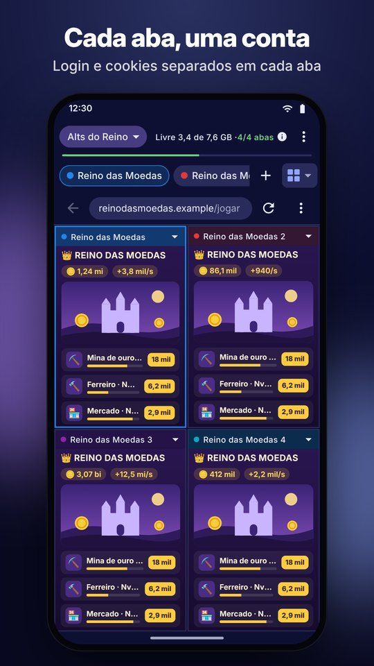
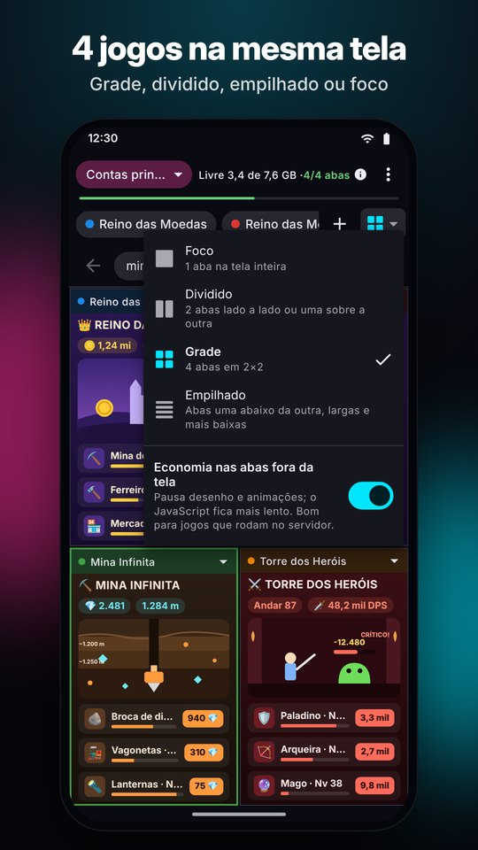
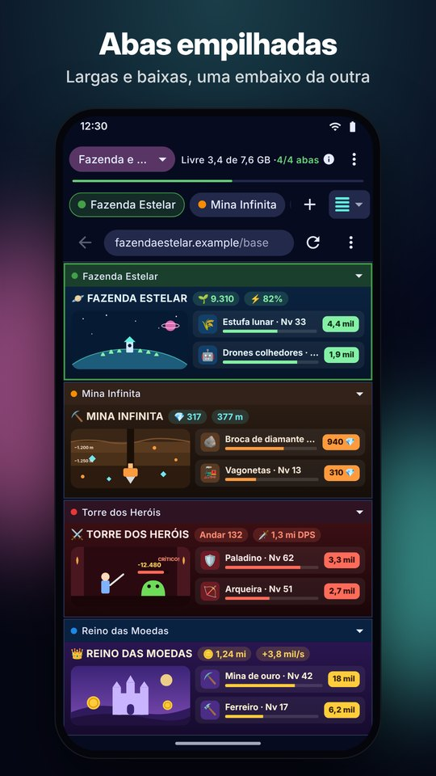
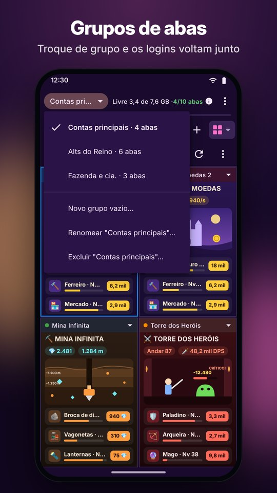
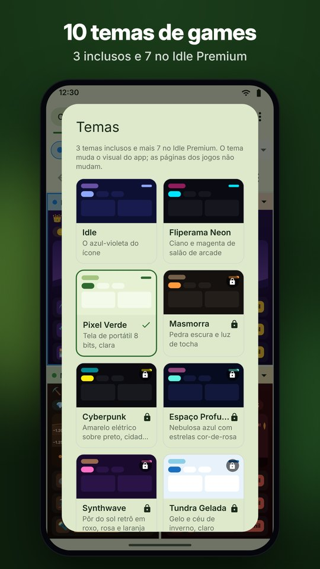
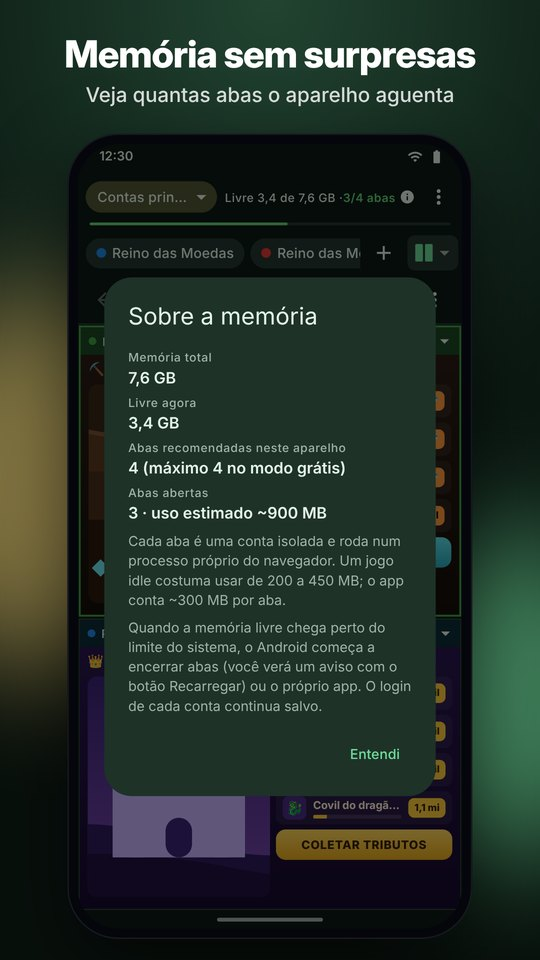
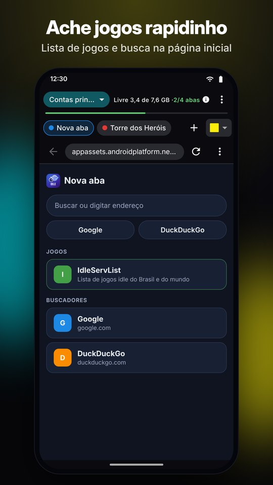

O Idle Browser é um navegador para Android feito para jogos idle de navegador. Cada aba tem login, cookies e dados próprios, então você joga com várias contas ao mesmo tempo, lado a lado.

Os jogos que aparecem nas imagens são fictícios.






Em poucos minutos você tem as suas contas rodando juntas.
Toque em + e escolha Página Buscar (lista de jogos, Google e DuckDuckGo) ou Digitar URL para ir direto ao endereço do jogo.
Quando a página do jogo abre, a aba ganha o nome do site sozinha. Para escolher outro nome, use ⋮ → Renomear.
Cada aba é isolada: login, cookies, save local e cache não se misturam. Abra o mesmo jogo em outra aba e entre com outra conta. As abas do mesmo site ficam numeradas (ex.: “Meu Jogo”, “Meu Jogo 2”).
O botão de layout, ao lado do +, tem quatro modos: Foco (1 aba na tela inteira), Dividido (2 abas), Grade (4 abas em 2×2) e Empilhado (abas largas, uma embaixo da outra).
Toque na barrinha colorida de uma célula para deixá-la ativa (a barra de endereço passa a controlá-la). Toque duas vezes para ampliar e de novo para voltar. A seta ▾ escolhe qual aba aparece naquela célula.
No botão de grupo, no canto superior esquerdo, use Salvar abas abertas como grupo. Ao trocar de grupo, as abas atuais fecham e as do outro grupo abrem, já com os logins.
O topo mostra a memória livre e quantas abas o aparelho aguenta bem (ex.: “3/4 abas”). Toque nele para ver os detalhes. Se passar do recomendado, o app avisa antes de abrir mais uma aba.
No botão de layout, ligue Economia nas abas fora da tela: as abas que não estão visíveis param de desenhar. Funciona bem com jogos que rodam no servidor.
As abas rodam enquanto o app está aberto (inclusive em tela dividida do Android). Ao sair do app, todas pausam e voltam quando você abre de novo. Jogos que calculam o progresso no servidor continuam avançando normalmente.
Não. As abas pausam quando você sai do app e voltam quando você abre de novo. Para jogos idle que guardam o progresso no servidor, isso não muda nada: ao voltar, o jogo mostra o que foi acumulado.
Depende da memória. O app usa até 40% da RAM total como referência e conta cerca de 300 MB por aba. Um aparelho com 4 GB costuma aguentar bem 4 abas; com 8 GB, perto de 10. Toque na barra de memória para ver o número do seu aparelho.
Não. Quando falta memória, o Android pode encerrar abas. Toque em Recarregar: o login continua salvo. Se acontecer sempre, feche uma aba ou ligue a economia nas abas fora da tela.
O Google bloqueia esse tipo de login dentro de navegadores embutidos em apps. Use o login por e-mail e senha do jogo, ou outra opção de login que ele ofereça.
Apaga a aba e os dados daquela conta neste aparelho: login, cookies, cache e save local. O progresso guardado no servidor do jogo não é afetado. O mesmo vale para excluir um grupo.
O app só separa as contas. Cada jogo tem as próprias regras: alguns não permitem mais de uma conta por pessoa. Confira os termos do jogo antes.
Entre com a mesma conta Google na Play Store, abra o app e toque em ⋮ → Idle Premium → Restaurar compra.
Não. Por segurança, os dados das abas ficam só no aparelho e não entram no backup do Android.